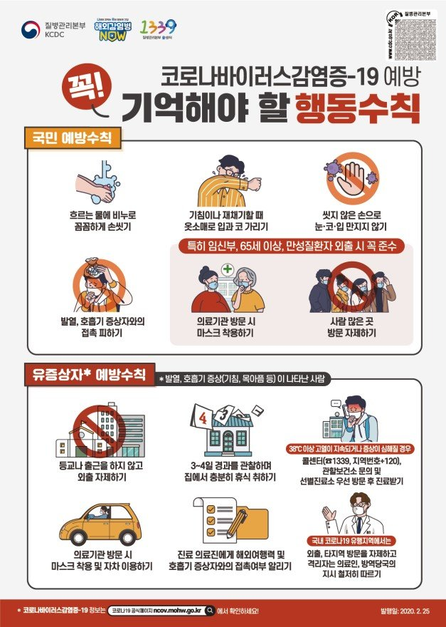

2019년 12월 중국 우한에서 처음 발생한 이후 중국 전역과 전 세계로 확산된, 새로운 유형의 코로나바이러스(SARS-CoV-2)에 의한 호흡기 감염질환이다. 코로나바이러스감염증-19는 감염자의 비말(침방울)이 호흡기나 눈·코·입의 점막으로 침투될 때 전염된다. 감염되면 약 2~14일(추정)의 잠복기를 거친 뒤 발열(37.5도) 및 기침이나 호흡곤란 등 호흡기 증상, 폐렴이 주증상으로 나타나지만 무증상 감염 사례도 있다.
2019년 12월 중국 우한에서 처음 발생한 이후 중국 전역과 전 세계로 확산된, 새로운 유형의 코로나바이러스(SARS-CoV-2)에 의한 호흡기 감염질환이다.
코로나바이러스감염증-19는 감염자의 비말(침방울)이 호흡기나 눈·코·입의 점막으로 침투될 때 전염된다. 감염되면 약 2~14일(추정)의 잠복기를 거친 뒤 발열(37.5도)
및 기침이나 호흡곤란 등 호흡기 증상, 폐렴이 주증상으로 나타나지만 무증상 감염 사례도 있다.

코로나19 감염을 예방하기 위해서는 흐르는 물에 30초 이상 손 씻기를 꼼꼼히 하고, 외출하거나 의료기관에 들를 때 마스크 착용 같은
예방 수칙을 지켜야 한다.
마스크의 경우 식품의약품안전처가 정하는 보건용 마스크를 사용하면 되는데, 식약처는 KF80(황사용)·KF94·KF99(이상 방역용) 등급으로 나눠 보건용 마스크를 관리하고 있다.
다만 숫자가 높으면 미세입자 차단 효과가 크지만, 산소투과율이 낮아 숨쉬기가 어려운 단점이 있다.
손씻기의 경우 흐르는 물에 비누로 30초 이상 손을 씻는 것이 가장 효과적이지만, 세면대가 없는 곳에서 활동할 때는 알코올 손 세정제로 수시로 씻는 것이 좋다.
한편, 미국 질병통제예방센터(CDC)와 국립보건원(NIH)의 종합판 연구에 따르면
코로나19 바이러스는 에어로졸 형태로 3시간 이상, 구리 표면에서 4시간, 마분지에서 24시간, 플라스틱이나 스테인리스 표면에서 2, 3일간 전염력을 유지할 수 있다.
따라서 손을 자주 씻는 것이 중요하며, 눈을 비비거나 코를 만지는 습관을 버리는 것이 매우 중요하다.
[네이버 지식백과] 코로나바이러스감염증-19 - (COVID-19) (시사상식사전, pmg 지식엔진연구소)